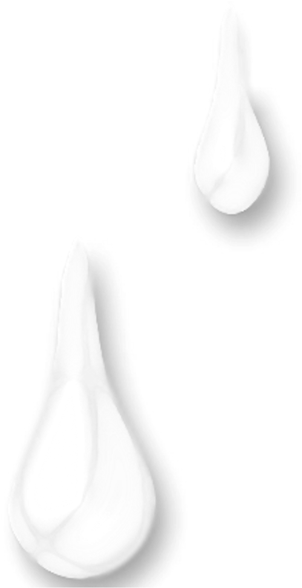

Todo mundo sabe que não somos perfeitos
E por consequência disto não somos eternos
Então, todos têm noção que algum dia morrerão
Que deixarão pai e mãe e todos que amam.
Mas o facto de estarmos cientes que isso aconteça não significa que estamos preparados.
Preparados para ver o nosso próximo partir
Preparados para não sentir mais o seu aroma
...o seu sorriso...abraço e felicidade que contagia
Preparados para que tudo que aconteceu se tornem lembranças
Meras lembranças do que passou e nunca, mas nunca, voltarão.
Saber que a saudade fará parte de sí, porque ele não estará lá para o fazer desaparecer.
É algo tão inevitável, que quando acontece os primeiros momentos são de dúvida
Dúvida se ele partiu mesmo
Dúvida de ele não estar aqui
Que apesar de estar bem afrente da gente
Vestido de preto, com os olhos fechados
Pálido...não o torna real
Meras lembranças do que passou e nunca, mas nunca, voltarão.
Saber que a saudade fará parte de sí, porque ele não estará lá para o fazer desaparecer.
É algo tão inevitável, que quando acontece os primeiros momentos são de dúvida
Dúvida se ele partiu mesmo
Dúvida de ele não estar aqui
Que apesar de estar bem afrente da gente
Vestido de preto, com os olhos fechados
Pálido...não o torna real
E quando você notar que não sumiu, é aí que tomas noção que não é uma simples miragem
...É real. A certeza vem à tona.
E a partir daí as lágrimas que escorrem sobre o rosto parecem fazer sentido.
Todos rezam para isto não chegar
Pelo menos eu rezei
Rezei para que você não me deixasse ...mas deixou...tão cedo!
Lembro quando eu estava mal e a primeira coisa que disseste foi:
“Nunca estarás só. Nunca te deixarei.
Se eu tiver que partir, tu vens comigo.
Se tu partires, irei contigo”
Eu acreditei nestas lindas palavras e por muito tempo fui irracional
Ignorando que eu ou você partiria, mas nem um nem outro iria junto.
Talvez porque as pessoas não pensam nesta parte quando gostam de alguém
O que é normal... Ainda não superei o facto de não ter você todas as manhãs
O quanto me dói ver o local que antes preenchias vazio
Na verdade, tudo que envolve não estares mais lá magoa
Porque queria que o nosso “pra sempre” durasse “pra sempre”
Ignorando que eu ou você partiria, mas nem um nem outro iria junto.
Talvez porque as pessoas não pensam nesta parte quando gostam de alguém
O que é normal... Ainda não superei o facto de não ter você todas as manhãs
O quanto me dói ver o local que antes preenchias vazio
Na verdade, tudo que envolve não estares mais lá magoa
Porque queria que o nosso “pra sempre” durasse “pra sempre”